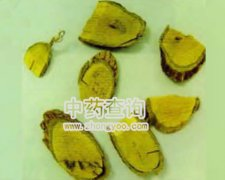

血风藤

拼音
Xuè Fēnɡ Ténɡ
别名
青藤、铁牛入石、青筋藤（广州部队《常用中草药手册》）。
来源
为鼠李科植物翼核果的根、茎。全年可采，洗净切片晒干。
生境分布
生于山野、沟边的疏林下或灌木丛中。分布广东、广西等地。
药材特点
木质藤本，高2～3米。根粗壮，外皮暗紫红色。茎多分枝，有细纵纹，幼枝绿色。单叶互生；革质；具柄；卵形或矩圆形，长4～8厘米，宽2～3.5厘米，顶端渐尖，基部阔楔形或近圆形，全缘或稍作波浪形，两面绿色无毛，下面侧脉极明显。腋生聚伞花序或有时成顶生圆锥花序；花小，绿白色；花萼5裂，裂片三角形；花瓣5，匙形；雄蕊5；子房2室，藏于5角形的花盘内。坚果球形，熟时红褐色，顶部有一鸭舌形膜质的薄翅，翅长3～5厘米。花期夏月。
性状
性状鉴别 本品的根呈圆柱形，稍弯曲，分枝极少，直径2-7cm，长20-60cm，表面粗糙，有的具纵棱，暗红紫色。栓皮松脆，可层层剥离。断面木部黄褐色至棕褐色，密布细小的黑色针孔状小点，有的中央有细小的髓。藤茎外表灰褐色，有纵条纹，少分枝。断面木部黄褐色至灰棕色，髓部明显。气微。味淡。
性味
甘，温。 ①广州部队《常用中草药手册》："甘涩，温。" ②《广西中草药》："味淡，性微温。"
功能主治
补益气血，祛风活络。治气血亏损，风湿疼痛，跌打损伤。 ①广州部队《常用中草药手册》："补气补血，舒筋活络。治气血亏损，月经不调，风湿筋骨痛，四肢麻木，跌打损伤。" ②《广西中草药》："补血祛风，强壮筋骨。治贫血，风湿性关节炎，腰肌劳损。"
用法用量
内服：煎汤，0.5～1两。
化学成分
根含生物碱，黄酮甙、酚类、氨基酸、蒽醌。
药理作用
1：无药理作用数据
摘录
《中药大辞典》